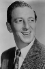
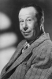
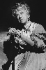

Country:United States, 102 minutes
Spoken languages:English
Genres:Adventure, Fantasy, Family
Director(s):Victor Fleming
Writer(s):Edgar Allan Woolf, Noel Langley, Florence Ryerson
Video Codec:Unknown
Number: 760


Certification:
Storyline:
Young Dorothy finds herself in a magical world where she makes friends with a lion, a scarecrow and a tin man as they make their way along the yellow brick road to talk with the Wizard and ask for the things they miss most in their lives. The Wicked Witch of the West is the only thing that could stop them.
Cast:   


Medium: Original DVD,
Loaned: No
Aspect ratio: Unknown